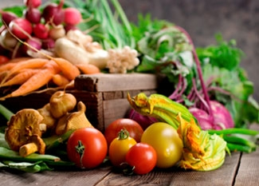

ISTOCKPHOTO/KELLY CLINE
Although many people find it hard to afford fresh fruits and vegetables for their family, the U.S. government can help by supplying Food Stamps and coupons that are redeemable at farmers markets to those in need.